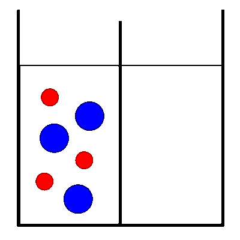

Erregungsleitung (elektrisch): Chemische Grundlagen
Diffusion

Kaliumionen (in wässriger Lösung);
Chloridionen (in wässriger Lösung);
- Die Trennwand ist undurchlässig für Wasser und alle Ionensorten.
- Nach dem Entfernen der Trennwand können alle Ionen aufgrund ihrer thermischen Bewegung ungehindert in der gesamten Flüssigkeit umherwandern.
Externe Links
Diffusion